Muoversi all’interno del corso 2
Fare gli esercizi di abbinamento (Standard e Drag&Drop) 3
Fare gli esercizi di ricomposizione 7
Vedere i risultati degli esercizi 10
Jak poruszaæ siê po programie? 10
Jak wykonywaæ æwiczenia typu „Po³¹cz” (Standard oraz Drag&Drop)? 10
Jak wykonywaæ æwiczenia typu “Luki”? 12
Jak wykonywaæ æwiczenia typu „Quiz”? 13
Jak wykonywaæ æwiczenia typu „Uk³adanka” 15
Jak uzyskaæ pomoc przy uzupe³nianiu æwiczeñ? 17
Jak wyszukiwaæ s³owa w s³owniku? 17
Jak zobaczyæ wyniki æwiczeñ? 17
Requisiti hardware e software 17
Caratteristiche del CD-ROM 101 viaggi nel lessico italiano:
la facilità d'uso: l’interfaccia basata sul browser rende l'utilizzo del programma semplice e intuitivo;
la completezza: tutti gli esercizi sono costruiti attorno agli argomenti più significativi per l’efficace comunicazione in italiano. Tutti gli argomenti sono stati trattati in maniera esauriente. Troverete sia esercizi adatti a principianti sia esercizi destinati agli apprendenti di livello medio. La completezza e la ricchezza del lessico utilizzato negli esercizi non vi deluderà.
l’idoneità per qualsiasi tipo di studio della lingua: indipendendentemente dal tipo del manuale che usate e dalle modalità di studio, 101 viaggi vi saranno di grande aiuto. Gli esercizi comprendono si basano sul lessico più frequente e pertanto indispensabile nello studio dell’italiano
la presenza di un dizionario: il corso è accompagnato da un dizionario che contiene circa tremila parole. Se hai bisogno di consultare il dizionario mentre stai facendo l’esercizio, lo trovi già lì, alla portata del click.
i test: oltre a poter sempre vedere i risultati ottenuti nei singoli esercizi, potete misurarvi con i test che riguardano ogni argomento/unità. Questo è un modo efficace e veloce di verificare i progressi nello studio.
la funzionalità: la semplicità dell’interfaccia da una parte e l’estrema cura dei contenuti fanno sì che 101 viaggi sono un prodotto funzionale e ricco, dove gli esercizi sono sempre stimolanti.
Autori:
Karolina Brach, Roman Sosnowski
Titolo:
101 viaggi nel lessico italiano
Realizzazione:
Femis Sp. z o.o.
Supporto tecnico:
Solint-Eniac Sp. z o.o. (£ukasz Rosó³)
Fotografie e disegni:
Karolina Brach e Microsoft Clipart Gallery
Consulenza:
Iwona KaŸmierczak
Software utilizzato per la preparazione degli esercizi:
Hotpotatoes (registered, commercial version)
Il corso presenta la schermata principale
[screenshot inizio.htm]
da cui partono i dieci percorsi: Conosciamoci meglio, Corpo umano, Cucina, Casa, Natura, Spesa, Viaggi, Tempo libero, Lavoro, Tempo
Per iniziare il percorso (l’unità) scelto bisogna cliccare sulla foto corrispondente al percorso. Si apre una videata con il flash interattivo che dà accesso ai singoli esercizi.
[screenshot indice_conosciamoci.htm]
Per tornare alla videata principale, da cui inizia il viaggio nel lessico, bisogna cliccare su [INIZIO] posto in alto.
Cliccando sulle foto corrispondenti si iniziano i mini-percorsi contenenti da 1 a 5 esercizi. Il click ci porta sempre al primo esercizio del mini-percorso. Una volta fatto l’esercizio, per andare all’esercizio successivo, biosgna spostarsi utilizzando la freccia posta in alto [=>]. Dopo il completamento del mini-percorso il programma torna alla videata con il flash interattivo. A questo punto può essere scelto un nuovo mini-percorso.
Dagli esercizi, in qualsiasi momento si può tornare a un livello superiore scegliendo il tasto [INDIETRO}
Gli esercizi di abbinamento di tipo standard richiedono che tra le varie opzioni disponibili a destra sia scelta quella corretta.
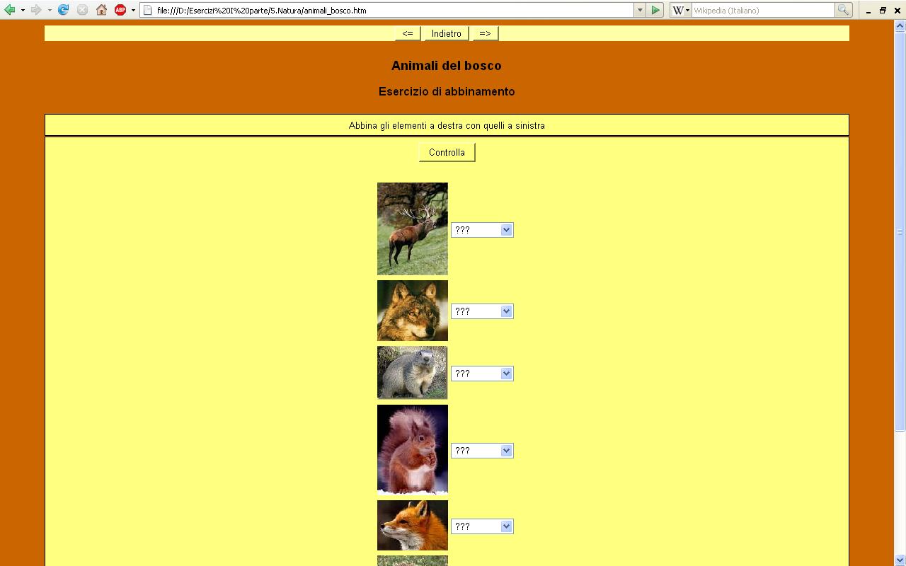
Dopo aver eseguito le scelte dalla lista per tutti gli elementi di sinistra bisogna cliccare su [Controlla] per verificare la correttezza delle risposte. Le risposte corrette cambiano aspetto e sono accompagnate da :-) mentre le risposte errate presentano la lista delle opzioni con l’ultima scelta effettuata.
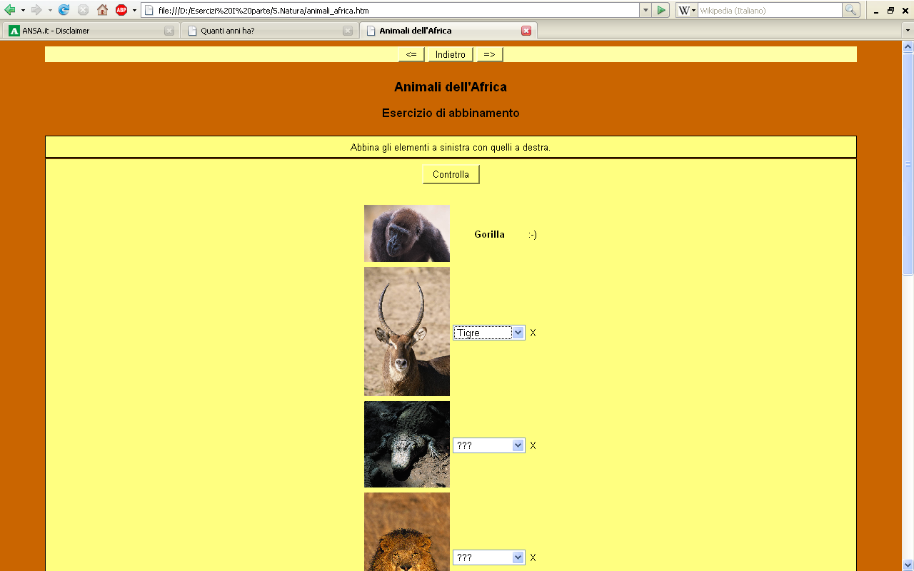
Gli esercizi di abbinamento di tipo Drag&Drop richiedono che gli elementi a destra siano trascinati con il mouse e posti accanto agli elementi di sinistra.
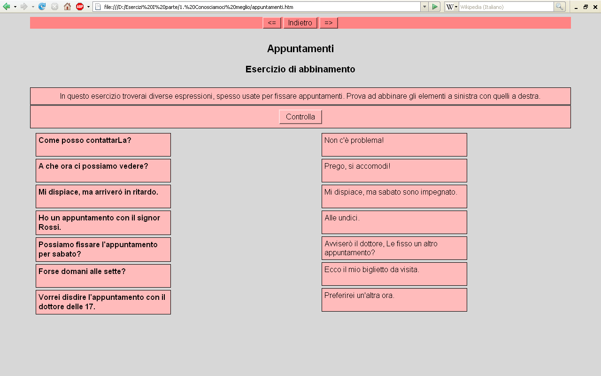
Dopo aver trascinato e abbinato tutti gli elementi bisogna cliccare su [Controlla] per verificare la correttezza delle risposte. Le risposte errate vengono evidenziate in nero. Si può procedere alla correzione delle risposte errate.
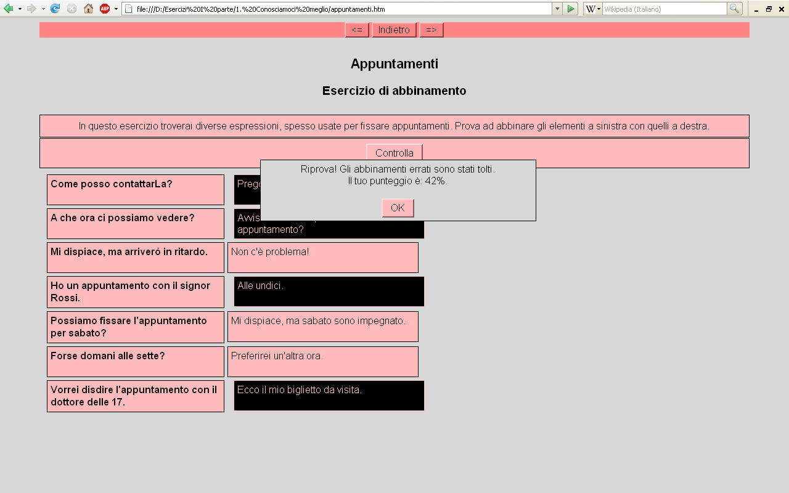
Gli esercizi di cloze consistono nel riempimento degli spazi vuoti con una parola adatta al contesto. Le parole da inserire in alcuni casi sono indicate nell’esercizio (in alto o accanto a ogni spazio), in altri casi bisogna proprio trovarle nella memoria.
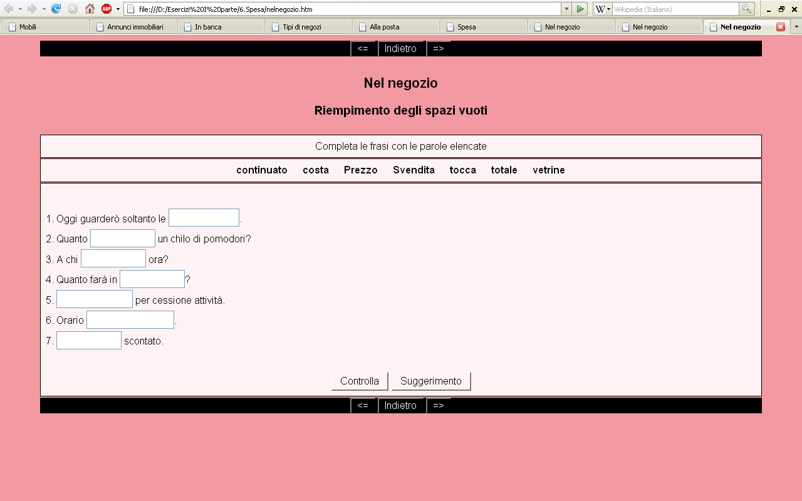
Dopo aver inserito o scelto le parole con cui riempire gli spazi vuoti, bisogna cliccare su [Controlla] per verificare il risultato. Le risposte corrette cambiano aspetto e non si possono più modificare mentre le risposte errate rimangono aperte alle modifiche.
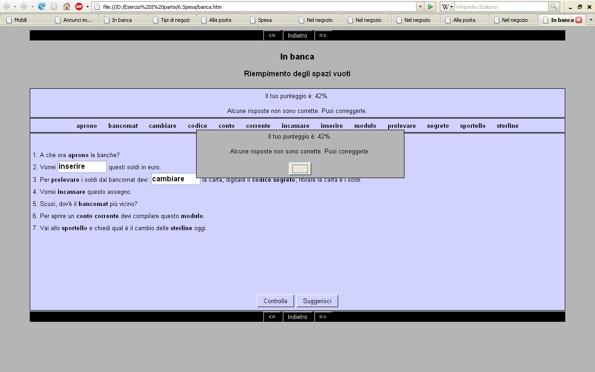
I quiz possono richiedere o la scelta tra le varie opzioni o la breve risposta.
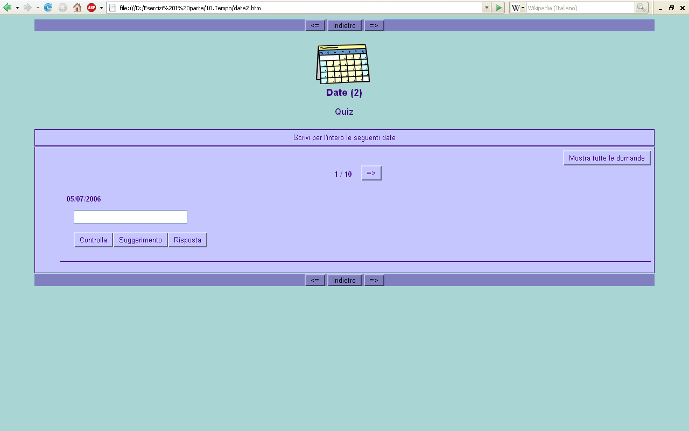
Le domande del quiz possono essere visualizzate o una ad una oppure tutte insieme. Per il secondo tipo di visualizzazione bisogna cliccare [Mostra tutte le domande].
A differenza degli altri tipi di esercizi le domande del quiz sono controllate singolarmente. Quindi, se le domande sono dieci, bisogna cliccare dieci volte su [Controlla]
Ogni volta che viene fornita una risposta errata nel quiz del tipo “a risposta breve”, vengono evidenziate le parti della risposta che non sono corrette.
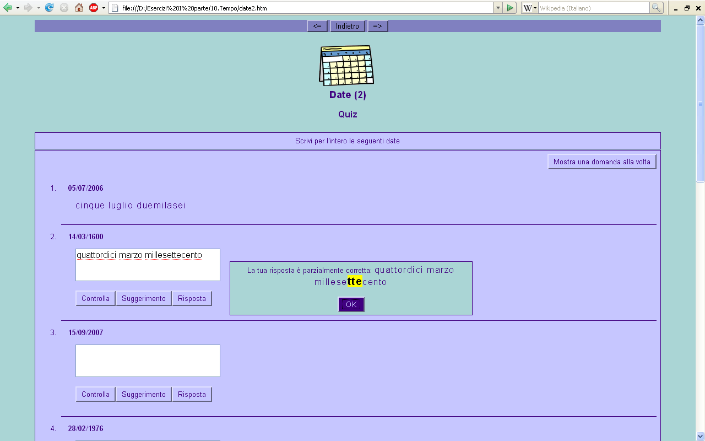
Ogni volta che viene fornita una risposta errata nel quiz del tipo “a scelta multipla”, la scelta errata viene segnalata con una crocetta e appare l’invito a riprovare con la risposta.
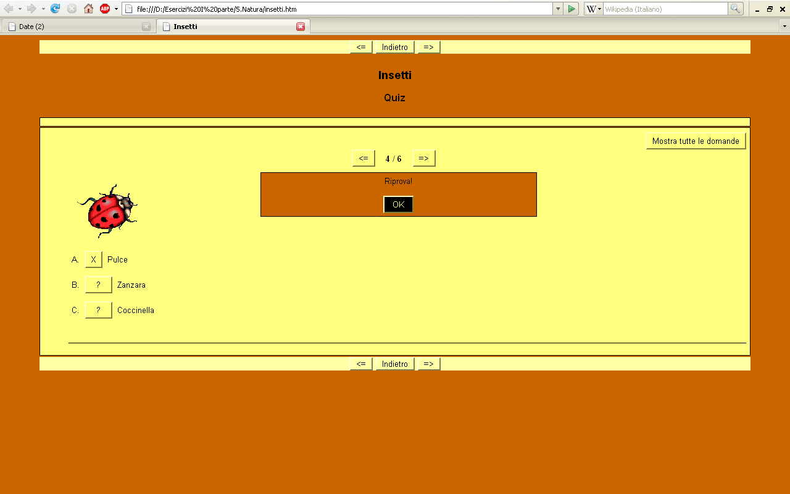
Gli esercizi di ricomposizione consistono nella messa in ordine degli elementi. Per completare il compito bisogna trascinare gli elementi con il mouse e posizionarli secondo l’ordine richiesto.
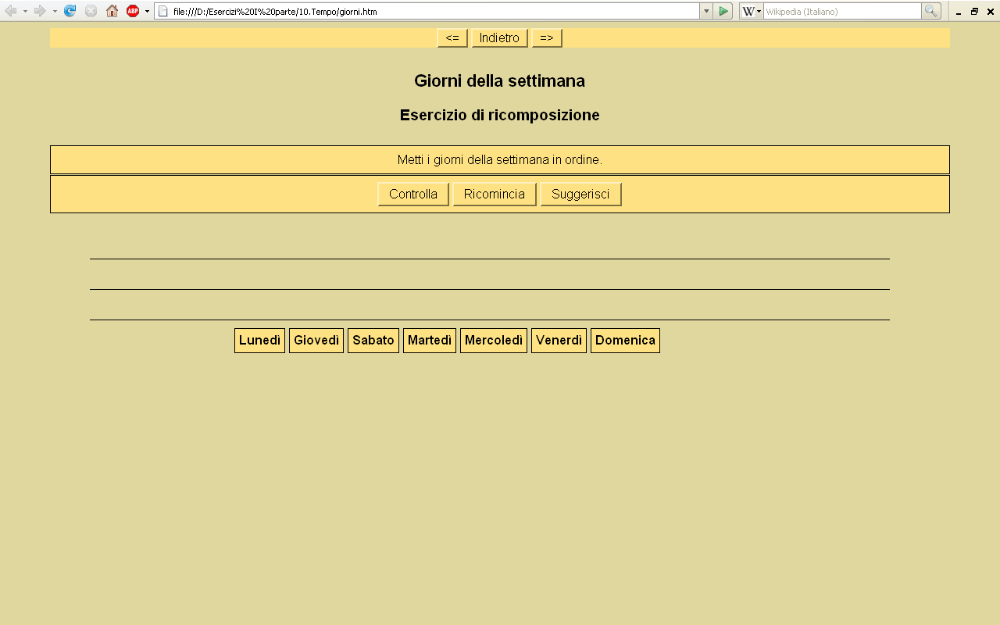
Quando la ricomposizione è pronta bisogna cliccare su [Controlla] per verificarne la correttezza. In qualsiasi momento si può ricominciare la ricomposizione senza che questo influisca sul punteggio.
Se ci sono errori nella ricomposizione, questo viene immediatamente segnalato e, quindi, per finire l’esercizio, bisogna eliminarli tutti.
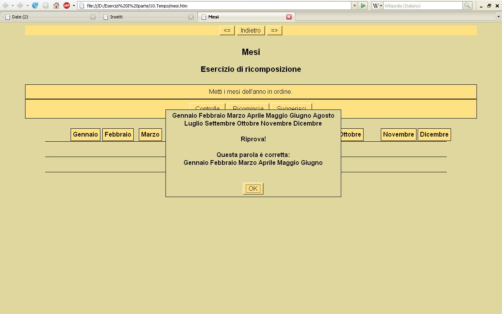
Le parole crociate sono il tipo di esercizio che richiede la maggiore pazienza e la maggiore attenzione.
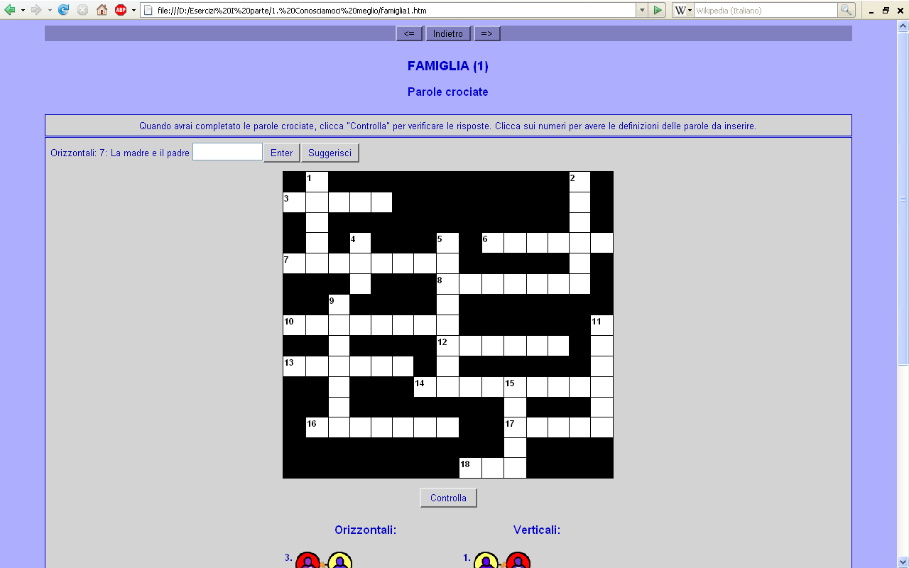
La verifica della correttezza del cruciverba avviene alla fine del suo completamento. Pertanto, gli eventuali errori si possono vedere solo nella fase della verifica.
Il riempimento delle caselle avviene cliccando sulle caselle con i numeri. In alto a sinistra si apre immediatamente la definizione associata al numero e lo spazio per inserire la parola. Una volta inserito il vocabolo associato alla definizione bisogna cliccare [Enter] per inserire le lettere nelle caselle.
ATTENZIONE! In alcuni case le definizioni sono espresse attraverso i disegni o le immagini.
Nel caso degli errori, le caselle corrette sono lasciate dal programma con la lettera mentre le caselle errate vengono ripulite.
Nella maggior parte degli esercizi è possibile ottenere aiuti. Per farlo serve il tasto [SUGGERIMENTO] o [SUGGERISCI] o [RISPOSTA] . Tuttavia bisogna ricordare che ogni aiuto richiesto diminuisce il punteggio ottenuto nell’esercizio.
Per consultare il dizionario bisogna cliccare su {DIZIONARIO], tasto disponibile quando si è all’interno di una delle dieci unità.
[screenshot indice_c.htm]
Successivamente bisogna scegliere la lettera dell’alfabeto e consultare la lista delle parole che iniziano con la lettera scelta
[screenshot dizionario.htm]
Si presenta la lista delle parole che iniziano con la lettera scelta
[screenshot a.html]
Per vedere i risultati ottenuti nel lavoro con gli esercizi bisogna cliccare su {RISULTATI], tasto disponibile quando si è all’interno di una delle dieci unità.
Apparirà una lista di tutti gli esercizi con accanto il punteggio ottenuto nel completamento di ciascun esercizio.
[screenshot risultati.htm]
Fare i test
I test, da un punto di vista tecnico, sono normali esercizi. La navigazione nei test è quindi uguale alla navigazione negli esercizi. Le osservazioni relative ai diversi tipi di esercizi possono essere applicate ai test.
Po w³¹czeniu kursu pojawi siê okno g³ówne
[screenshot inizio.htm]
z którego mo¿ecie rozpocz¹æ dziesiêæ œcie¿ek tematycznych po jêzyku w³oskim: Conosciamoci meglio, Corpo umano, Cucina, Casa, Natura, Spesa, Viaggi, Tempo libero, Lavoro, Tempo
Aby rozpocz¹æ wybran¹ œcie¿kê (modu³) nale¿y klikn¹æ na odpowiadaj¹ce jej zdjêcie. Pojawi siê ekran z interaktywnym flashem, z którego mo¿ecie wejœæ do poszczególnych æwiczeñ.
[screenshot indice_conosciamoci.htm]
Aby wróciæ do ekranu g³ównego, z którego rozpoczyna siê podró¿ po s³ownictwie, nale¿y klikn¹æ na [INIZIO], który znajduje siê u góry ekranu.
Po klikniêciu na odpowiednie zdjêcie rozpoczniecie mini wêdrówkê, zwieraj¹c¹ od 1 do 5 æwiczeñ. Klikniêcie rozpocznie zawsze podró¿ od pierwszego æwiczenia z mini wêdrówki. Aby przejœæ do kolejnego æwiczenia nale¿y u¿yæ strza³ki umieszczonej u góry [=>]. Po zakoñczeniu ca³ej mini wêdrówki, program powróci do ekranu z interaktywnym flashem. St¹d mo¿ecie rozpocz¹æ kolejn¹ mini wêdrówkê.
W ka¿dym momencie wykonywania æwiczenia mo¿ecie wróciæ na wy¿szy poziom, wciskaj¹c klawisz [INDIETRO].
W æwiczeniach typu „Po³¹cz” w wersji standardowej (gli esercizi di abbinamento standard) nale¿y wybraæ w³aœciw¹ odpowiedŸ spoœród dostêpnych po prawej stronie mo¿liwoœci.
Aby sprawdziæ, czy æwiczenie zosta³o wykonane poprawnie, nale¿y klikn¹æ na [Controlla]. Odpowiedzi poprawne zmieniaj¹ wygl¹d i towarzyszy im znak :-), natomiast przy odpowiedziach b³êdnych pojawi siê ponownie lista mo¿liwych opcji oraz znak X.
W æwiczeniach typu „Po³¹cz” w wersji Drag&Drop nale¿y przeci¹gn¹æ myszk¹ elementy znajduj¹ce siê po prawej stronie do odpowiadaj¹cym im elementom po lewej stronie.
Aby sprawdziæ, czy æwiczenie zosta³o wykonane poprawnie nale¿y klikn¹æ na [Controlla]. Pola z b³êdnymi odpowiedziami zostan¹ zaznaczone na czarno.
W æwiczeniach typu „Luki” nale¿y wype³niæ puste miejsca jednym s³owem, pasuj¹cym do kontekstu. W niektórych æwiczeniach s³owa, którymi nale¿y wype³niæ puste miejsca zosta³y podane u góry lub obok luki, w pozosta³ych przypadkach nale¿y polegaæ na w³asnej pamiêci.
Aby sprawdziæ, czy æwiczenie zosta³o wykonane poprawnie nale¿y klikn¹æ na [Controlla]. Odpowiedzi poprawne zmieni¹ wygl¹d i nie bêd¹ mog³y byæ ju¿ modyfikowane, natomiast przy odpowiedziach b³êdnych pozostan¹ okienka do wype³nienia.
W æwiczeniach typu quiz nale¿y wybraæ poprawn¹ odpowiedŸ wœród kilku zaproponowanych lub wpisaæ krótk¹ odpowiedŸ.
Pytania z quizu mog¹ byæ wyœwietlane pojedynczo lub wszystkie razem. Aby zmieniæ tryb wyœwietlania nale¿y klikn¹æ na [Mostra tutte le domande].
W przeciwieñstwie do pozosta³ych æwiczeñ pytania z quizu mo¿na sprawdzaæ tylko pojedynczo. Jeœli wiêc w æwiczeniu jest 10 pytañ, nale¿y klikn¹æ na ka¿de pytanie oddzielnie na [Controlla]
W przypadku udzielenia b³êdnej odpowiedzi w quizie typu „krótka odpowiedŸ”, zostanie zaznaczony tylko fragment, w którym pojawi³ siê b³¹d.
Za ka¿dym razem kiedy udzielimy b³êdnej odpowiedzi w quizie typu „wielokrotnego wyboru”, b³êdna odpowiedŸ zostanie odznaczona krzy¿ykiem (X) oraz pojawi siê okno z zachêt¹ do ponownego udzielenia odpowiedzi.
W æwiczeniach typu „Porz¹dkowanie” nale¿y u³o¿yæ podane elementy wed³ug w³aœciwej kolejnoœci, przeci¹gaj¹c je myszk¹.
Aby sprawdziæ, czy æwiczenie zosta³o wykonane poprawnie nale¿y klikn¹æ na [Controlla]. W ka¿dym momencie mo¿na rozpocz¹æ uk³adanie od pocz¹tku, co nie wp³ynie na koñcow¹ punktacjê. W przypadku pope³nienia b³êdu, zostanie on natychmiast zaznaczony. Aby zakoñczyæ æwiczenie nale¿y zatem wyeliminowaæ wszystkie b³êdy.
Krzy¿ówki wymagaj¹ od was du¿ej cierpliwoœci oraz wiêkszej uwagi, ni¿ w poprzednich æwiczeniach.
Sprawdzenie poprawnoœci krzy¿ówki jest mo¿liwe dopiero po jej ca³kowitym wype³nieniu. Ewentualne b³êdy pojawi¹ siê dopiero w fazie sprawdzania.
Aby wype³niæ krzy¿ówkê, nale¿y klikn¹æ na okienka z numerami. W górnym lewym rogu pojawi siê natychmiast definicja oraz miejsce na wpisanie odpowiedzi. Nastêpnie nale¿y klikn¹æ na [Enter], a has³o zostanie wstawione automatycznie do krzy¿ówki.
UWAGA! W niektórych przypadkach definicje s¹ zilustrowane grafik¹.
W fazie poprawiania pola z odpowiedziami b³êdnymi zostan¹ wyczyszczone.
W wiêkszoœci przypadków mo¿na uzyskaæ pomoc lub wskazówkê, wybieraj¹c klawisz [SUGGERIMENTO] lub [SUGGERISCI] lub [RISPOSTA]. Nale¿y jednak pamiêtaæ, ¿e ka¿da wskazówka obni¿a punktacjê.
Aby skorzystaæ ze s³ownika nale¿y klikn¹æ na [DIZIONARIO]. Klawisz ten jest dostêpny wewn¹trz ka¿dego z 10 modu³ów.
[screenshot indice_cucina.htm]
Nastêpnie nale¿y wybraæ w³aœciw¹ literê i odnaleŸæ s³owo na liœcie.
[screenshot a.htm]
Aby zobaczyæ wyniki æwiczeñ nale¿y klikn¹æ na [RISULTATI]. Klawisz ten jest dostêpny wewn¹trz ka¿dego z 10 modu³ów. Po klikniêciu pojawi siê lista ze wszystkimi æwiczeniami oraz osi¹gniêt¹ punktacj¹.
[screenshot risultati.htm]
Testy, z punktu widzenia technicznego, s¹ zwyk³ymi æwiczeniami. Poruszanie siê po testach odbywa siê w taki sam sposób jak po æwiczeniach.
Personal Computer con il processore Pentium III o superiore, scheda grafica, 200 MB di spazio libero sul disco fisso, sistema operativo Windows XP/Windows Vista, browser Internet Explorer (versione 5.0 o superiore) o Mozilla Firefox (versione 1.0 o superiore). Per sfruttare alcune delle funzioni del software il browser deve essere abilitato per i cookies. Non è necessaria nessuna connessione Internet.
Komputer z procesorem Pentium III lub nowszy, karta graficzna, 200 MB wolnej przestrzeni dyskowej, system operacyjny Windows XP/Windows Vista, przegl¹darka Internet Explorer (wersja 5.0 lub wy¿sza) lub Mozilla Firefox (wersja 1.0 lub wy¿sza). Niektóre funkcje oprogramowania wymagaj¹, ¿eby przegl¹darka akceptowa³a cookies. Nie jest potrzebne ¿adne po³¹czenie internetowe.
Il seguente contratto di licenza è in lingua polacca, in quanto la presente licenza è regolata dalla legge polacca in materia.
UMOWA LICENCYJNA
Niniejsza Umowa licencyjna (zwana dalej „Umow¹ licencyjn¹”) zostaje zawarta pomiêdzy licencjobiorc¹ (zwanym dalej „Licencjobiorc¹”) a Femis Sp. z o.o. (zwan¹ dalej Femis), spó³k¹ za³o¿on¹ wed³ug prawa
polskiego, z siedzib¹ w Krakowie, ul. Morawskiego 5, Polska.
DEFINICJE
U¿yte w niniejszej Umowie licencyjnej okreœlenie „Oprogramowanie” powinny byæ rozumiane w nastêpuj¹cy sposób:
„Oprogramowanie” oznacza zestaw æwiczeñ do jêzyka w³oskiego pod wspólnym tytu³em 101 viaggi nel lessico italiano znajduj¹cych siê na p³ytce opatrzonej stosownymi oznaczeniami wraz z programami i skryptami dostarczanymi przez Femis s³u¿¹cymi do skutecznego korzystania z æwiczeñ.
PRAWA W£ASNOŒCI INTELEKTUALNEJ I ZASTRZE¯ENIE PRAWA W£ASNOŒCI
Oprogramowanie jest u¿yczane na licencji, nie stanowi przedmiotu sprzeda¿y.
Prawa do Oprogramowania Femis oraz jej Licencjodawców i s¹ chronione przez prawo polskie, odpowiednie miêdzynarodowe regulacje prawne, traktaty i konwencje dotycz¹ce w³asnoœci intelektualnej oraz praw w³asnoœciowych w tym tak¿e przez tajemnice handlowe. Od daty uzyskania Oprogramowania Licencjobiorca zgadza siê do³o¿yæ wszelkich starañ w celu zabezpieczenia Oprogramowania przed nieupowa¿nionym u¿ywaniem, powielaniem, rozpowszechnianiem lub publikacj¹. Wszelkie prawa, które nie zosta³y wyraŸnie przyznane w ramach niniejszej Umowy licencyjnej pozostaj¹ prawami zastrze¿onymi wy³¹cznie dla Femis i jej Licencjodawców.
UDZIELENIE LICENCJI
Zgodnie z warunkami niniejszej Umowy licencyjnej, Femis udziela Licencjobiorcy indywidualnej, niewy³¹cznej, nieprzenaszalnej licencji na u¿ywanie Oprogramowania na jednym komputerze osobistym.
ZAKRES KORZYSTANIA Z LICENCJI
Dozwolone sposoby korzystania
a. Licencjobiorca mo¿e zainstalowaæ, u¿ywaæ i przechowywaæ kopie Oprogramowania na komputerach osobistych.
b. Licencjobiorca mo¿e sporz¹dziæ jedn¹ (1) kopiê Oprogramowania dla celów archiwizacji.
Niedozwolone sposoby korzystania
a. Licencjobiorcy nie wolno sprzedawaæ, wynajmowaæ, wydzier¿awiaæ, udzielaæ dalszej licencji (sublicencji), wypo¿yczaæ Oprogramowania
b. Licencjobiorcy nie wolno redystrybuowaæ Oprogramowania w ca³oœci lub w czêœci
c. Licencjobiorcy nie wolno odtwarzaæ struktury Oprogramowania, ani dekompilowaæ b¹dŸ rozk³adaæ Oprogramowania
d. Licencjobiorcy nie wolno podejmowaæ prób obchodzenia rozwi¹zañ technologicznych, kontroluj¹cych dostêp oraz wykorzystanie Oprogramowania.
g. Licencjobiorca nie bêdzie usuwa³ ani zaciera³ informacji dotycz¹cych jakichkolwiek praw patentowych, praw autorskich, praw do znaków towarowych b¹dŸ praw w³asnoœciowych przys³uguj¹cych Femis lub jej licencjodawcom, zawartych w lub do³¹czonych do Oprogramowania
h. Licencjobiorcy nie wolno od³¹czaæ poszczególnych czêœci lub komponentów Oprogramowania do u¿ytku
indywidualnego.
OKRES OBOWI¥ZYWANIA I ROZWI¥ZANIE UMOWY LICENCYJNEJ
Licencja zacznie obowi¹zywaæ od momentu instalacji zakupionej p³ytki 101 viaggi nel lessico italiano i bêdzie obowi¹zywaæ do momentu, gdy Licencjobiorca zdecyduje siê zakoñczyæ korzystanie z Oprogramowania. Jeœli Licencjobiorca zdecyduje siê na rozwi¹zanie umowy licencyjnej bêdzie zobowi¹zany do odinstalownaia, usuniêcia lub zniszczenia ca³oœci Oprogramowania jak równie¿ wszelkich jego kompletnych lub czêœciowych kopii.
OGRANICZENIE ODPOWIEDZIALNOŒCI
a. W ¿adnym wypadku firma Femis i/lub jej odpowiedni dostawcy nie ponosz¹ odpowiedzialnoœci za jakiekolwiek szkody szczególne, bezpoœrednie lub wtórne ani jakiekolwiek inne szkody powsta³e na skutek utraty mo¿liwoœci u¿ytkowania, danych lub zysków spowodowanej dzia³aniem wynikaj¹cym z umowy, zaniedbaniem lub innym poœrednim dzia³aniem oraz ze wzglêdu na u¿ycie lub zastosowanie Oprogramowania.
b. Odpowiedzialnoœæ odszkodowawcza za naruszenie, ca³kowita ³¹czna odpowiedzialnoœæ Femis wynikaj¹ca z niniejszej umowy licencyjnej, z uwzglêdnieniem wszelkich przyczyn, w tym miêdzy innymi odpowiedzialnoœci kontraktowej, deliktowej (w tym odpowiedzialnoœci w zakresie zaniedbania), pe³nej, naruszenia gwarancji, wprowadzenia w b³¹d lub innej, w ka¿dym przypadku nie bêdzie przekracza³a kwot zap³aconych Femis przez licencjobiorcê na podstawie niniejszej umowy licencyjnej za korzystanie z Oprogramowania.
Copyright 2006-2007, Femis Sp. z o.o. Wszelkie prawa zastrze¿one.
Copyright 2006-2007, Femis Sp. z o.o. Tutti i diritti riservati.
Ewentualne pytania dotycz¹ce niniejszej umowy licencyjnej prosimy kierowaæ na adres: info@femis.pl
Eventuali domande relative alla licenza vanno indirizzate a: info@femis.pl